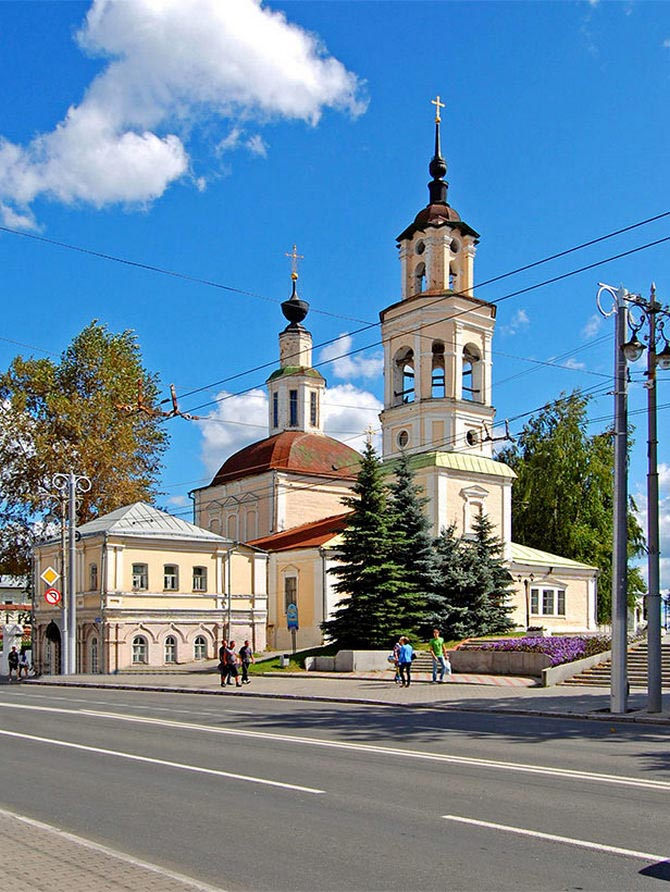
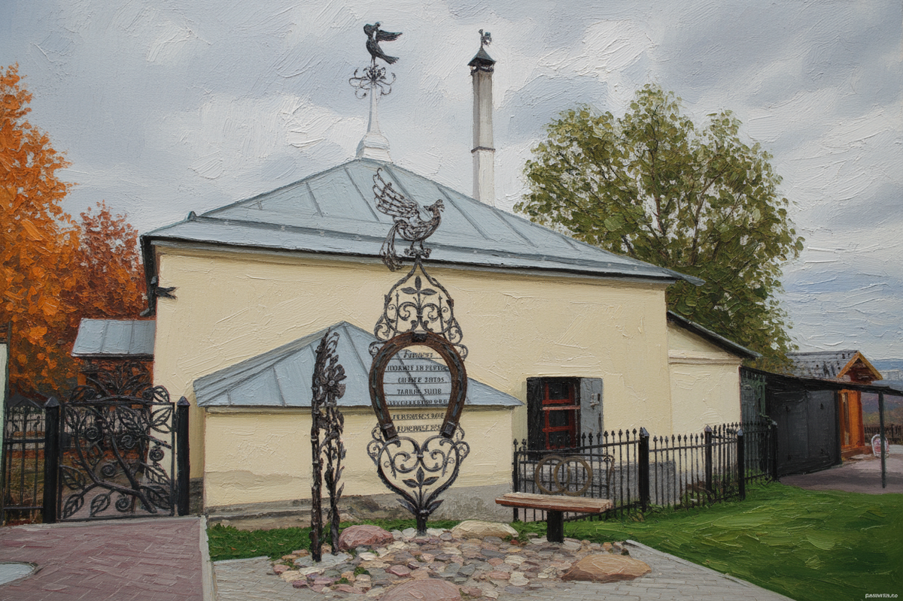
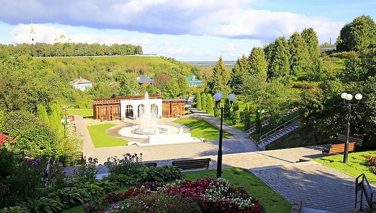
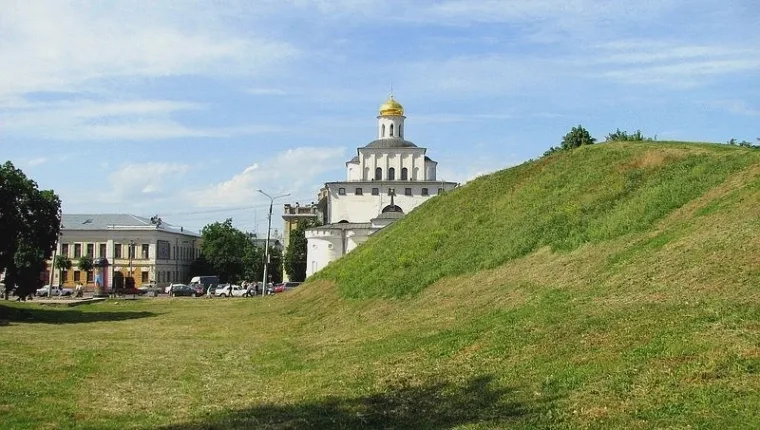

Золотые ворота
Архитектура
Выдающийся памятник древнерусской военно-оборонительной архитектуры и монументального зодчества XII века, объект Всемирного наследия ЮНЕСКО
Дата основания: 1164 г.

Успенский собор
Архитектура
Величественный белокаменный храм Северо-Восточной Руси, послуживший образцом для одноименного собора в Московском Кремле. Внутри сохранились фрески Андрея Рублёва.
Дата основания: 1158 г.

Дмитриевский собор
Архитектура
Знаменитый белокаменный храм-дворец, известный своей уникальной «каменной поэмой» — более 500 резных рельефов с изображениями святых, мифических зверей и растений.
Дата основания: 1194 г.

Троицкая церковь
Архитектура
Изящный старообрядческий храм из красного кирпича, расположенный у Золотых ворот. В наши дни в его здании открыт Музей хрусталя и лаковой миниатюры.
Дата основания: 1916 г.

Николо-Кремлевская церковь
Архитектура
Храм в стиле барокко, возведенный на территории бывшего Владимирского кремля. Примечателен своей строгой архитектурой, гармонично дополняющей городской пейзаж.
Дата основания: 1769 г.

Богородице-Рождественский монастырь
Архитектура
Древняя монашеская обитель, окруженная белокаменными стенами, которая на протяжении нескольких веков оставалась главным духовным центром Руси.
Дата основания: 1191 г.

Исторический музей
Музеи
Красивый двухэтажный особняк из красного кирпича в русском стиле, где представлена масштабная экспозиция истории края от каменного века до советского периода.
Дата основания: 1906 г.

Владимирский планетарий
Музеи
Популярный научно-просветительский центр, предлагающий познавательные лекции о космосе, астрономические наблюдения и интерактивную панораму звездного неба.
Дата основания: 1962 г.

Музей ложки
Музеи
Оригинальный частный музей, собравший самую большую коллекцию ложек в России. Здесь можно увидеть королевские приборы и старинные деревянные ложки.
Дата основания: 2015 г.

Кузница Бородиных
Музеи
Действующая интерактивная кузница в самом сердце Владимира. Здесь проводят экскурсии и мастер-классы, где каждый турист может сам сковать сувенирный гвоздь.
Дата основания: 2010 г.

Памятник 850-летия Владимира
Прогулки
Монументальная трехгранная стела на Соборной площади из белого камня. Украшена бронзовыми фигурами древнего зодчего, пахаря и современного рабочего-текстильщика.
Дата основания: 1958 г.

Патриарший сад
Прогулки
Роскошный террасный сад на склоне холма в центре города. Настоящий зеленый оазис с фонтанами, лестницами, редкими растениями и знаменитой владимирской вишней.
Дата основания: 1585 г.

Козлов вал
Прогулки
Сохранившийся фрагмент древней земляной оборонительной системы города, примыкающий к Золотым воротам. Популярное место для прогулок и исторических панорам.
Дата основания: 1158 г.